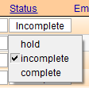
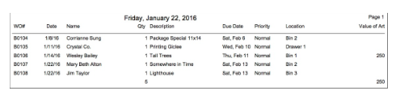

Find Incomplete Orders
As part of successful shop management, FrameReady provides different ways of tracking incomplete Work Orders.
How to Find Incomplete Orders
Clicking the List of Incomplete Orders button presents a list of all Work Orders, for all customers, with the radio button marked as Incomplete on the Shop tab.
-
If there is more than one order, the screen displays a List View. If there is only one, it displays in Form View.
-
This list can be used as a production tool.
From the Main Menu
-
In the Work Orders section, click the Find Incomplete Work Orders button.
A badge to the right indicates the number of incomplete Work Orders.

-
Click the Status field to change the status to: complete, incomplete, or hold.
If your list of incomplete Work Orders is too long and includes jobs that have been complete, adopt the shop management habit of marking Work Orders as Complete.
See: Progress Field - Track Completion Status
From the Work Orders File
-
In the Work Orders file, click the List of Incomplete Work Orders sidebar button.
-
Click the Status field to change it.

From the Work Orders Find Screen
-
In the Work Orders file, click the Find button.
-
Enter your search criteria: select Incomplete.
-
In the Due Date field, enter a date range, e.g. ..12/24/2019 to find all Work Orders due before Christmas.
FrameReady must be set to calculate due dates before you can search against them. See: Set up Work Order Options - Due Date Tab
Use the Incomplete List as a Production Tool
-
Use the Print List button to create a printer friendly version of the information on the screen.
-
This list can be posted in the work room and orders can be checked or initialed when completed and the new location of the item written on the page.

Remember to update the Work Order when completed
When framing is completed, you can update the computer screen by:
-
Changing the status to Complete so that it will not longer appear on your Incomplete List.
-
Changing the location to Ready for Pickup or the location of the package, e.g. Ready 2.
-
Clicking the email button to instantly notify the customer that their framing is complete. Learn how to edit the personal message here.
Both the printout and the screen show the total value of the artwork in your possession at any one time for insurance purposes. If you exceed your insured value, you may need to get a rider to extend your coverage.
How to Print Incomplete Orders
© 2023 Adatasol, Inc.